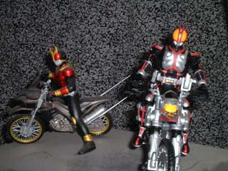

城弾シアター特撮館

『仮面ライダークウガ』と言う作品を愛するあまりこのようなページも作ってしまいました。
特撮専用掲示板
『仮面ライダーシリーズ』『ウルトラシリーズ』などの特撮作品専用掲示板です。
それ以外の話題はノンジャンルのメイン掲示板でお願いします。
逆にいえば特撮がテーマであればすべてＯＫです。
マニア向け。お子様向け。有名なもの。ディープなネタ。小ネタ。俳優さん・声優さんの話題。
新作。旧作。テレビ。ビデオ。劇場など特撮がテーマであればすべてＯＫ。
ちなみに管理人がきっちり対応できるのは
『仮面ライダーＢｌａｃｋ』以降のライダーシリーズ（「真・仮面ライダー」は未見）
『ウルトラセブン』（新旧）
『ウルトラマンティガ』以降のウルトラシリーズ。
『超星神シリーズ』
『人造人間キカイダー』
これ以外だとレスは怪しいのですが、それでもよいと仰るならお好きな特撮を存分に語ってください。
注意事項
＊荒らしなどの行為は絶対に禁止です。またそれに準ずると管理人が判断した場合は削除対象になります。
＊書き込みは出来れば日本語でお願いします。僕が読めませんので(笑)
＊特撮系なら宣伝もありですが、金銭の授受を伴うものはお断りいたします。見つけ次第削除します。
むろん特撮に無関係な『出会い系』などの宣伝は即座にデリート(笑)
＊たとえご自身が受け入れられない作品でも、ファンはいます。その辺りを考慮しての書き込みをお願いします。
＊ネタばれはテレビはその回の放送が終了していればＯＫ。劇場版は公開中は御遠慮願います。
仮面ライダーの人気投票です。あなたの好きなライダー誰？
ライダーの好敵手たちの人気投票です。
追加は可能なのでお気に入り怪人をどんどん投票してください（上限は５０）
ウルトラ戦士の投票です。投票者による追加も可能。
初期設定はタイトルになっているテレビシリーズが基本（ゾフィーは例外）
なおネクサスはデュナミストで変化するため投票者に委ねます。
モード（タイプ）チェンジは同一人物扱いで
ウルトラシリーズ（ウルトラＱ含む）に出てきた怪獣やロボット。
宇宙人の人気投票です。
ウルトラシリーズに出ていれば他に制約はありません。
番組としての戦隊シリーズの投票です。
（だからゴウライジャーの項目がない）
「ウルトラシリーズ」「戦隊シリーズ」「ライダーシリーズ」以外の
日本の特撮で好きなヒーローについてのものです。
『平成ライダー検定』
全十問。あなたはどれだけわかる？
検定に挑戦！
『スペシャルレポ』
『仮面ライダークウガ』において雄介が住み込みで働いていた『ポレポレ』のロケ地『るぽ』へ出向いてきました。
後楽園ゆうえんちプリズムホールで２００２年に開催された『仮面ライダーワールド０２』の様子です。
東京ドームアトラクションズプリズムホールで２００３年に開催された｢仮面ライダーワールド０３｣の様子です。
東京ドームアトラクションズプリズムホールで２００３〜２００４の冬休みに開催された『スーパーヒーローワールド』の様子です。
『仮面ライダー剣』のハカランダのロケ地である「くらんぼん」さんに行ってきました。
ライダー４０周年。戦隊３５作目を記念した展示イベントに。
２０１２暮れから２０１３年に始まりにかけて、ナゴヤドームで開かれたイベントに出向いた時の様子を。
寄贈作品
ライターマンさんからの寄贈作品。ホームページの方向性との関係であちらではなくこちらに投稿で。
『Ｍａｓｋｅｄ Ｒｉｄｅｒｓ！！』
特撮系リンク
『仮面ライダークウガ』のグロンギ語の翻訳などが載ってます。クウガファンなら一度は訪れてみるとよろしいかと。
５５５．そしてブレイドに対する好意的なレビューが好感をもてます。またライダー少女がとにかく可愛いです。